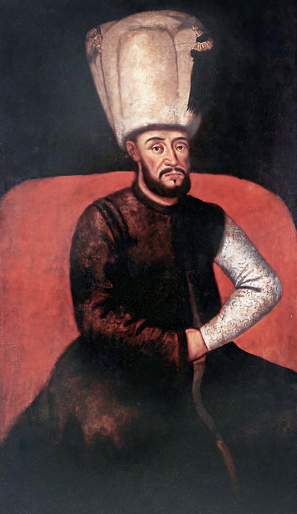

| önceki |  |
sonraki |
I. Mustafa, Osmanlı İmparatorluğu'nun on beşinci padişahıdır. Babası III. Mehmed, annesi Halime Sultan'dır. Osmanlı tarihinde iki kez tahta çıkan ve her iki seferinde de devlet idaresine ehil olmadığı gerekçesiyle tahttan indirilen padişahtır. Babasının ve kardeşinin döneminde 14 yıl boyunca sarayda ölüm korkusuyla kafes hayatı yaşadığı için akli ve ruhi melekeleri zedelenmiştir.
Saltanat Dönemleri ve Tahttan İndirilişleri
- İlk Saltanatı (1617 – 1618): Ağabeyi I. Ahmed'in vefatı üzerine yürürlüğe giren "Ekber ve Erşed" sistemi uyarınca hanedanın en yaşlı üyesi olarak tahta çıkarılmıştır. Ancak divan toplantılarında sergilediği tutarsız davranışlar ve devlet idaresini yürütememesi sebebiyle 96 gün sonra ulema ve devlet erkanının ittifakıyla tahttan indirilmiş, yerine yeğeni II. Osman (Genç Osman) getirilmiştir.
- İkinci Saltanatı (1622 – 1623): 1622 yılında Genç Osman'a karşı ayaklanan yeniçeriler ve sipahiler, sarayı basarak I. Mustafa'yı zorla tekrar tahta çıkarmışlardır. Genç Osman'ın Yedikule Zindanları'nda feci şekilde katledilmesiyle sonuçlanan bu isyan dönemi, imparatorluğun en karanlık ve anarşik devirlerinden biri olmuştur.
- Son İndirilişi: Ülkede asayişin tamamen bozulması, Sadrazam Kemankeş Ali Paşa ve Şeyhülislam Yahya Efendi'nin ortak kararıyla 1623'te I. Mustafa'nın yeniden tahttan indirilip yerine 11 yaşındaki yeğeni IV. Murad'ın geçirilmesiyle son bulmuştur. Mustafa, hayatının kalanını sarayda göz hapsinde geçirmiş ve 1639'da vefat etmiştir.
Ailesi
I. Mustafa'nın evlendiğine veya çocuğunun olduğuna dair tarihi kaynaklarda bir kayıt bulunmamaktadır.
I. Mustafa hakkında daha fazla bilgi için buraya tıklayın.